The best projects from people who stopped subscribing to SaaS and started building their own tools with Claude Code, Cursor, and AI coding assistants (2025-2026). Curated with commentary.
v4 — April 2026 • v3
In 2025-2026, something shifted. People stopped waiting for the perfect app and started building exactly what they needed. Not startups — personal tools. A thyroid patient who trained a model on 9 years of Apple Watch data. A dad who built a CRM to remember his kids' friends' birthdays. A CEO who replaced 90 minutes of inbox triage with a 5-minute AI briefing.
This report curates the 50 most interesting projects from 170+ we researched. For each, we explain what makes it stand out — and where relevant, how it compares to Varia, a personal infrastructure system built by Tomasz Kolinko that handles email triage, package tracking, smart home control, issue management, contacts across 5 platforms, and more, all on Redis + CherryPy + Claude Code.
The organizing question isn't "what did they build?" but "what made them build it, and what did they learn?"
The relationship problem: every CRM is built for sales pipelines, not for remembering your friend's dog's name
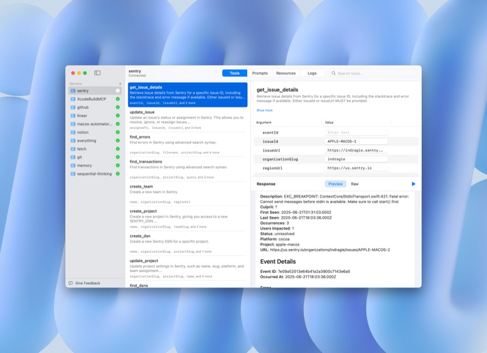
jdanielnd • 18 stars • Go + SQLite
A CRM that lives entirely in the terminal — no browser, no dashboard. The killer feature is its built-in MCP server: after meetings, tell Claude what happened and it logs interactions, updates deals, and creates follow-ups automatically. The "summary" field on each contact acts as a living dossier that Claude reads before meetings and updates after. 3K lines of Go, FTS5 search, Unix pipes.
I just wanted something fast that I could use without leaving the terminal.
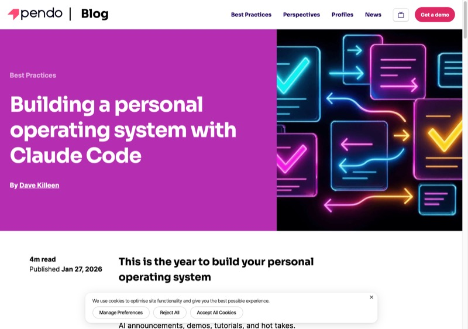
David Zheng / Duet • 87 stars • TypeScript + Rust
The most architecturally interesting CRM here: no UI at all. It mounts your CRM data as a virtual filesystem via NFS (macOS) or FUSE (Linux). Any tool that reads files — Claude Code, grep, vim — gets instant CRM access. Built by Duet (cloud agent workspace), it proves that the best AI integration is sometimes no integration at all: just make data accessible as files.
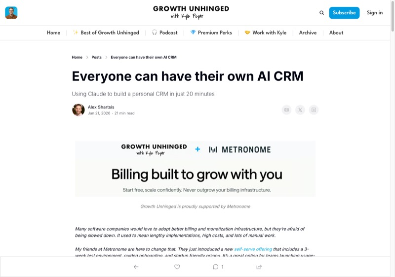
20 minutes to set up • $20/month
Instead of building an app, Shartsis (co-founder of Skyp) wired Claude Desktop to his existing Gmail, Calendar, and meeting notes via MCP. The system scans transcripts, figures out where relationships stand, generates follow-up tasks, and drafts personalized emails. No new UI — Claude IS the interface. This is the strongest argument for MCP over custom apps: you get 90% of CRM value with zero frontend work.
Built it in 20 minutes for only $20/month, and it's already more powerful than a traditional CRM.Claude Desktop MCP Gmail Google Calendar
Frank Buchner • 190 stars • Go
The anti-AI CRM. No AI features, no platform sync — deliberately minimal. Built by a parent who needed to track birthdays, dietary restrictions, and school events across family and friends. Optional CardDAV server for phone sync. The Monica replacement nobody asked for but many people need: just contacts, reminders, notes, and nothing else.
I wanted to manage both professional and personal relationships, especially with kids around.Go self-hosted CardDAV no AI
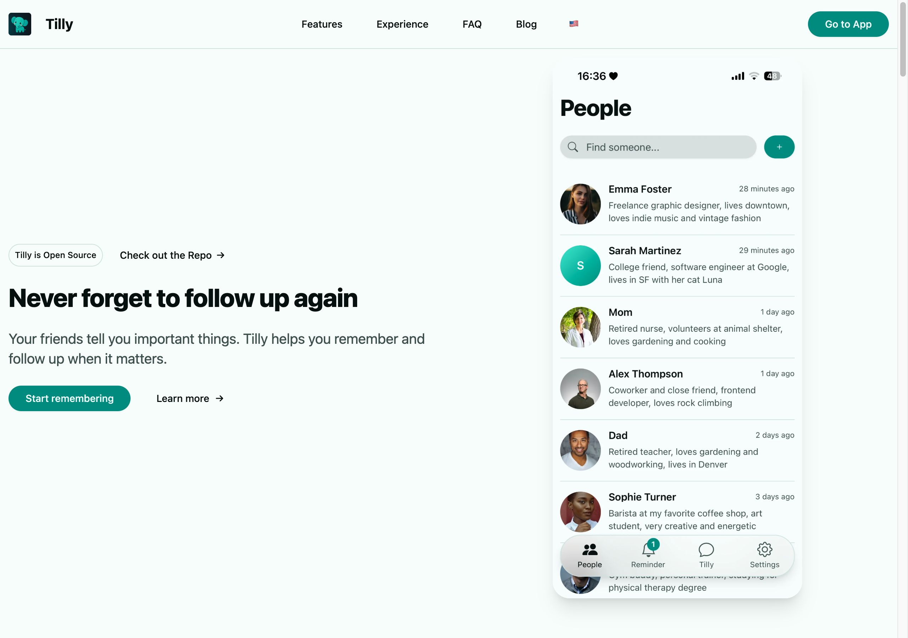
Carl Assmann • 62 stars • Show HN
A relationship journal that treats connections like a garden needing regular watering. E2E encrypted via Jazz protocol, offline-first PWA with real-time sync. The AI remembers what friends mention so you follow up naturally. $6/mo hosted or self-host. The emotional design — "nurture your connections" — sets it apart from every CRM that thinks in "deals" and "pipeline stages."
TypeScript Jazz protocol E2E encrypted PWA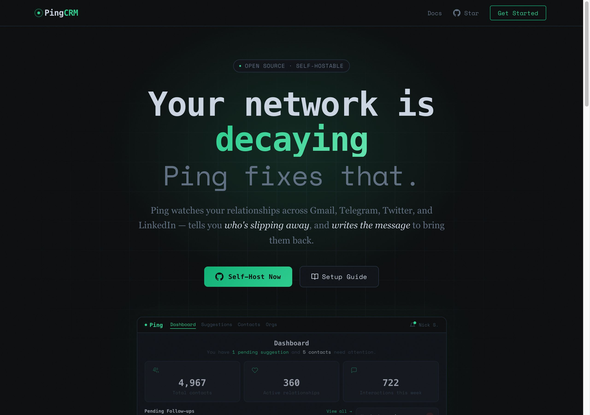
Nick Sawinyh • 8 stars • Show HN
Syncs Gmail, Telegram, Twitter, LinkedIn — then AI detects life events and drafts follow-ups. Scores relationships and notices who's going cold (no interaction in 90+ days) or changing jobs. The creator also maintains awesome-open-source-crm, so they've studied every alternative. FastAPI + Next.js.
Python FastAPI Next.js multi-platform syncSelf-extending architecture • macOS launchd
An AI agent that includes a "People CRM" sub-agent tracking relationships via Obsidian, auto-updating from iMessage, flagging dormant contacts, and tracking commitments. What makes Wiz special: it's self-extending — the agent can modify its own code and add new capabilities. Runs hourly via launchd with a nightshift batch job. The architecture (agent modifies itself) is both thrilling and terrifying.
RadReads newsletter (100K+ subscribers)
The most honest account of vibe-coding a CRM. The initial MVP came fast, but Khe Hy's follow-up post "Vibe coding? More like whack-a-mole coding" is essential reading for anyone thinking of building with AI. Every fix broke something else. Security concerns appeared the moment real users entered personal data. Still functional, still useful — but the journey matters more than the destination.
Vibe coding? More like whack-a-mole coding.Claude Code honest account non-developer
The killer use case for personal software — deeply personal, high-stakes, no generic SaaS can serve you
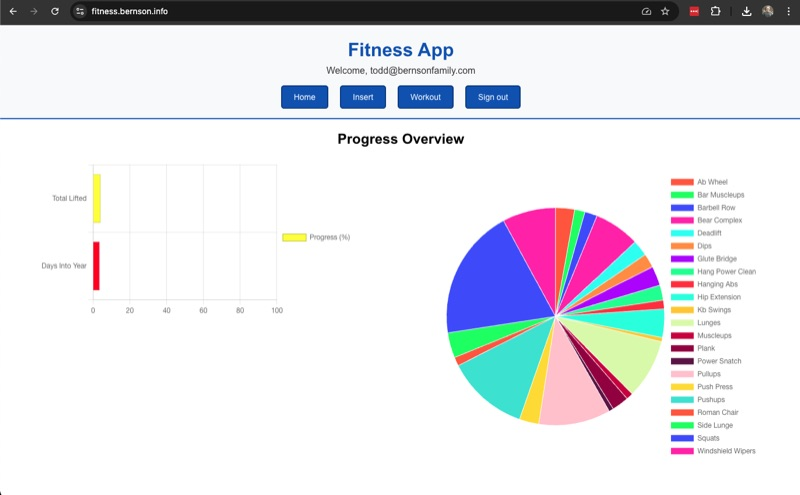
Rick Montero • Claude + Apple Health + Notion
Three-phase system: Phase 1 pulls Apple Health data (sleep, calories, HR, VO2 max, weight); Phase 2 generates weekly reviews cross-referencing health data with Notion workout logs; Phase 3 gives AI training recommendations based on recovery status. The insight: years of health data scattered across apps became actionable the moment Claude could read all of it at once.
Whatever your imagination can conceptualize, you can pretty much make.Claude Apple Health Notion MCP
Edd Mann • MCP servers for both platforms
Two MCP servers that let you talk to your workout data. Ask Claude about your training load and it generates throwaway React UIs with pace charts on the fly. The Garmin server exposes incredibly rich physiological data — VO2 max, HRV, running power, recovery time — that Garmin Connect makes impossible to query. The key idea: MCP turns proprietary data silos into conversational interfaces.
Felix Rieseberg • 77 stars • Open source
Endurance training plan generator that connects to Strava, analyzes your actual fitness level, and builds personalized marathon/triathlon/Ironman plans with proper periodization (base/build/peak/taper). Exports to .ics (calendar), .zwo (Zwift), .fit (Garmin), .mrc (TrainerRoad). The export variety is what makes this production-quality rather than a toy.
TypeScript Strava API multi-format exportJens-Christian Fischer • 21K lines, 63 files
Part of a 135,000-line personal infrastructure built in one month with Claude Code. The healthcare tool fills official Swiss insurance forms (AFP-Formulare) for his wife's psychotherapy practice, manages patient data, syncs with Google Calendar, and handles document OCR. It's not a weekend project — it's a real business tool replacing manual form-filling that was eating hours every week.
827 stars • No programming required
A health information system that runs entirely through Claude Code slash commands — no programming needed. Tracks symptoms, medications, radiation exposure from medical imaging, and provides consultations through 13 AI specialist personas. The standout feature: drug interaction detection with 5-level severity warnings. All data stays local in JSON files.
Claude Code CLI slash commands JSON local-only3,862 stars • Show HN • RAG over 38M medical papers
The most ambitious project here: an AI health assistant grounded in 38 million medical papers. Integrates Apple Health, Google Fit, Oura, Whoop, Garmin. Can run fully local via Ollama. Unlike ChatGPT giving generic health advice, OpenHealth shows its citations. The evidence-based approach is what makes this trustworthy rather than scary.
TypeScript Next.js RAG runs locally via Ollama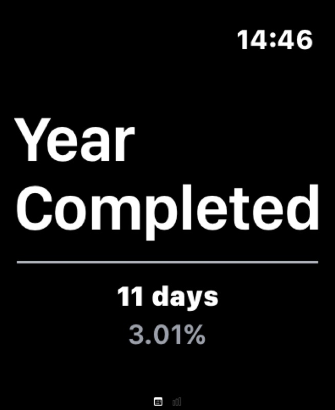
Terry Lin • Zero mobile experience
"I did dumbbell shrugs, 35lb, 10 reps" — speak to your Apple Watch and data is automatically structured. Built by someone with zero mobile experience using Cursor + Xcode. Featured on Lenny's Newsletter. The voice-first approach solves the core problem of workout logging: you can't type while holding weights.
Cursor Xcode SwiftUI Apple WatchWon 1st at Chiang Mai Cursor Hackathon (27 teams) • Shipped to App Store
An AAC app for aphasia patients, built by someone with zero coding experience. Won first place at a hackathon against 27 teams, then shipped to the App Store. This is the most compelling example of AI coding tools enabling people to solve problems they're uniquely positioned to understand but couldn't previously build solutions for.
Cursor Xcode iOS App Store zero prior codingEveryone builds a todo app. What's interesting is when they build something only they could need.
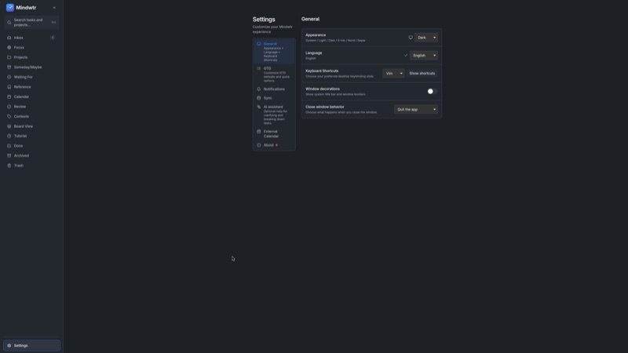
Dongda • Tauri v2 + React Native
A proper GTD implementation: Capture, Clarify, Organize, Reflect, Engage — all five phases. Desktop (Tauri v2) and mobile (React Native/Expo) apps. Optional AI (OpenAI/Gemini/Claude) for task clarification. What makes it stand out: it's not another todo list pretending to be GTD. It actually implements the full methodology with inbox processing, next-action contexts, and weekly reviews.
Tauri v2 React Native optional AI full GTDMike Masnick (Techdirt) • Built with Bolt + Lovable
The Techdirt founder built his task manager because "you're renting someone else's vision of how work should happen." Combines Intend-style daily planning with future task management. No specs, no wireframes — just described what he wanted in plain English. Uses Supabase for cross-device sync. The article is a manifesto for why personal software matters: when you build it, the tool fits your brain instead of the other way around.
You're renting someone else's vision of how work should happen.Bolt Lovable Supabase non-programmer
One weekend • Claude Code + Qwen3-Coder-Next
Dashboard, Email, Calendar, Tasks, Assignments, Articles, Pitches, Pomodoro Writing, Habits — 10 tabs in one app, all vibe-coded in a weekend. Local SQLite, Google Calendar/Gmail APIs. This is what happens when someone asks "why do I have 10 browser tabs open?" and builds the answer.
State machine approach • 3 persistent files
The anti-framework. Three markdown files (tasks.md, requirements.md, session.md) plus custom Claude Code commands. The key insight: Claude's built-in /todo doesn't persist across sessions — this does. Start a new conversation, type /continue-refactoring, and Claude picks up where it left off. Minimal, effective, no dependencies.
I really loved just hitting /continue-refactoring. This is the good stuff.Claude Code skills markdown zero dependencies
Claude Code + Obsidian • Designed for ADHD
Auto-tracks work, prioritizes tasks based on context and energy, generates standup reports. Specifically designed for ADHD: the system compensates for working memory limitations by maintaining context that the user can't. The standup report generator is brilliant — it reads your Obsidian activity and writes what you did, even when you can't remember.
Claude Code Obsidian ADHD-focusedVoice-first • For ADHD/autism
Six minutes of voice brain dump replaces an entire productivity system. Claude externalizes context and provides guardrails for someone with ADHD and autism. The 200+ HN comments confirm this resonated deeply. The core idea: instead of adapting your brain to a system, build a system that adapts to your brain.
Claude Code voice-first ADHD/autism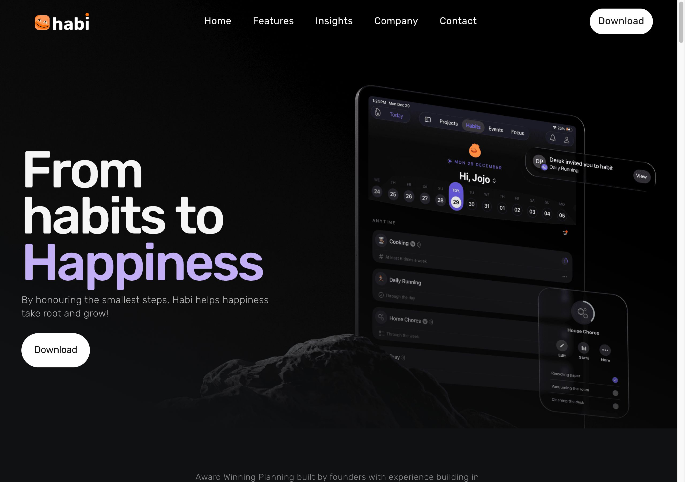
Show HN • Built with wife + daughter • iOS App Store
Habit tracker tied to calendar events, built as a family project. Pomodoro, project tracking, countdowns, soundscapes. The fact that it was built WITH family members (not just FOR them) makes it special — it's personal software as a creative act.
iOS App Store family project vibe codedu/Jero9871 on Reddit • 70K+ Android downloads • Flutter
A budget app where your balance grows by the millisecond (showing how much of your paycheck you've "earned" so far today). ~150 hours of vibe coding with Cursor. 70,000 downloads with zero advertising. The real-time counter is the hook — it's gamification of budgeting that actually works.
I simply like a number that goes up, other than in my bank account.Flutter Cursor 70K downloads zero ads
The category that most resembles Varia — people building entire operating systems for their lives
Fabien Penso • 131 HN pts • Single Rust binary
150,000 lines of Rust compiled to a 60MB binary with zero Node/Python dependencies. Multi-LLM routing, sandboxed execution, hybrid memory, self-extending skills at runtime, MCP tool servers, multi-channel (web/Telegram/API). The premise: if something touches your files, credentials, and daily workflow, you should be able to inspect every line. MIT licensed, no telemetry.
Jens-Christian Fischer • TypeScript • Swiss
The closest thing to Varia in ambition: 135,000 lines of TypeScript in one month. Email skill with semantic search over 10 years of messages, healthcare tool for wife's practice, meeting preparation that researches contacts, daily briefings, PII anonymizer, Tado thermostat control. Fischer sells courses on building personal AI infrastructure. This is the proof that "personal software" can be as complex as enterprise software.
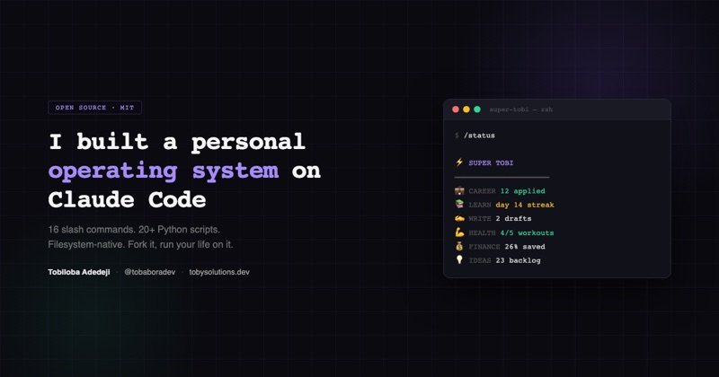
Tobiloba Adedeji • 19 slash commands + 23 Python scripts
An open-source personal OS on Claude Code. Job hunting, email triage, workout tracking, finance, message aggregation — with CLAUDE.md as the "kernel." What makes it stand out: it's fully open-source with good documentation, so you can actually learn from the architecture instead of just reading a blog post about how great it is.
Claude Code open-source Python well-documentedHetzner VPS ($5/mo) + Docker + Telegram
A persistent 24/7 AI running on a cheap VPS. The key insight: the agent has an immutable "body" (the daemon) and a mutable "brain" (the instructions it can rewrite). Two-tier memory: hot (operational) and long-term (Obsidian vault + git). Self-deploys via Coolify API. The cheapest route to an always-on personal assistant: Docker + Claude CLI + Telethon (Telegram client).
CEO of Ada • 373 stars
The project that launched a thousand clones. Morning inbox triage went from 90 minutes to 5. Four pillars: Communicate (inbox), Learn (briefings + meeting prep), Deepen Relationships (160+ contacts auto-enriched every 15 min), Achieve Goals (quarterly objectives filter all decisions). goals.yaml as the single source of truth.
A great chief of staff challenges priorities, says 'no' to low-leverage work.
Sterling Chin • 969 stars • Most popular template
The most forked personal OS template. Flat markdown state files, MCPs for Google Calendar/Gmail/Notion/Telegram, scheduled agents on Cloud Run for overnight work. The self-improving /PAIUpgrade mechanism lets the system modify its own prompts based on what worked. "CLAUDE.md does 80% of the work" — which is either inspiring or terrifying depending on your perspective.
Claude Code MCP Google Cloud Run 969 starsNon-coder • Full life OS via conversation
Didn't write a single line of code. Plans day, triages email, drafts responses, tracks projects across multiple clients, maintains a personal CRM, follows up with neglected contacts, tracks fitness/health/relationship goals, runs weekly reviews. All terminal-based. The most complete "non-programmer builds a life OS" story — and the blog post doubles as a tutorial.
Claude Code zero manual coding Google CloudCTO at IDEATECH • 38+ integrations
Every morning at 8 AM, Claude scans email, calendar, Sentry errors, and financial markets. 38+ integrations via Cowork connectors. The setup takes 10-15 minutes. The key distinction from Zapier: "Zapier moves data. Cowork thinks about it." It doesn't just aggregate — it reasons about what matters.
It doesn't replace Zapier. Zapier moves data. Cowork thinks about it.Claude Cowork 38+ integrations 10-min setup
Reddit r/ClaudeAI • AuDHD gamified productivity
Gamified productivity for someone with both ADHD and autism. Tasks have HP bars (you attack them instead of checking them off). Energy batteries gate which tasks are visible. Physics metaphor instead of deadlines (tasks have "mass" and "momentum"). "Cryo-stasis" mode with no guilt for breaks. Brain dump gets auto-structured into wiki/tasks/events. The most creative rethinking of task management in the whole report.
React SPA local-first gamified AuDHDReddit r/ClaudeAI • 42% → 98% accuracy
AI triages 100 emails into Respond Now / Can Wait / Awareness / SPAM. HTML dashboard with dropdown reclassify — corrections are exported back for training. Started at 42% accuracy, now 98-99%. Links to actual Outlook emails by unique ID. The self-improving feedback loop is the key innovation: most email AI is static, this one gets better as you use it.
Reddit r/selfhosted • Most creative automations
Squash court auto-booker (Claude + Chrome navigates the booking portal), supermarket deal tracker (ALDI/Lidl/REWE/HIT scrapers with AI matching to watchlist), concert monitor (Eventim/Ticketmaster within 100km, fuzzy artist match), Monica CRM face/name flashcards with spaced repetition, body measurement tracker. Circuit breaker for failures. The squash court booker alone is worth reading about.
React/SvelteKit FastAPI Pushover Claude HaikuThe original AI battleground — and the place where Varia started
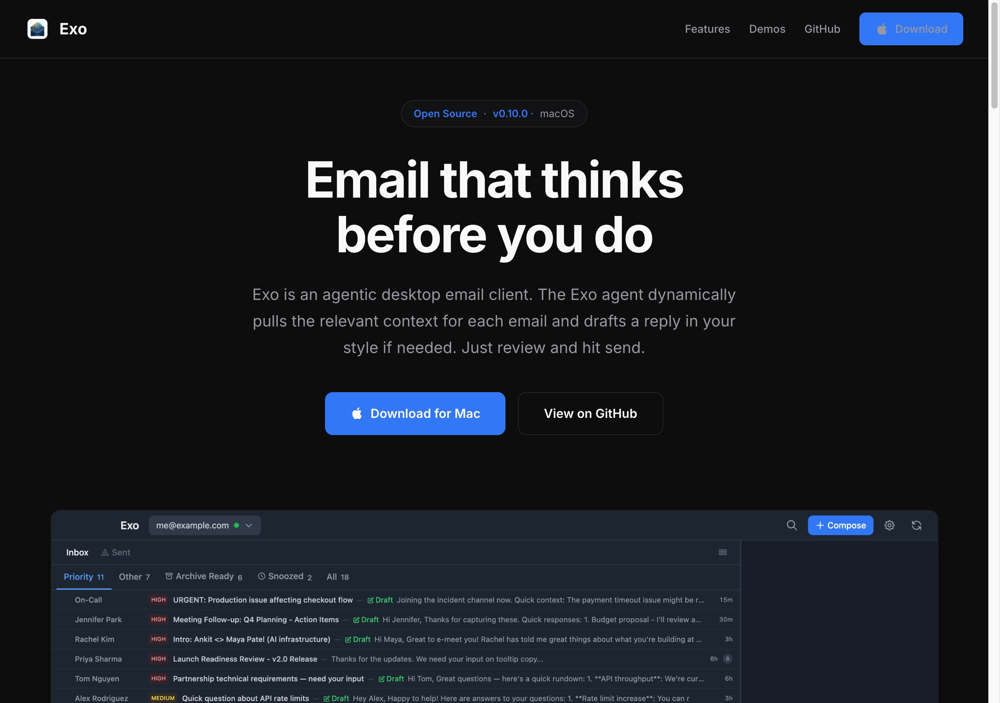
Ankit Gupta • Open source • Electron/React
An entire desktop email client where every email is analyzed, prioritized, and drafted before you open it. Agent-to-agent communication, persistent AI memories. The most ambitious email project in the report — not an MCP server or a triage plugin, but a complete Gmail replacement. Mac app available.
codefuturist • 30 stars • 47 tools
The most complete email MCP server: 47 tools, 7 prompts, 6 resources. Multi-account IMAP/SMTP, real-time IMAP IDLE watcher with AI triage, email scheduling with OS-level daemon, calendar extraction. The IDLE watcher is the killer feature — emails are triaged in real-time as they arrive, not in a batch.
A full-featured email client for AI assistants rather than basic read/send functionality.TypeScript Node.js IMAP/SMTP Docker
Patrick Freyer • 96 stars
22 tools giving AI full access to Apple Mail — reading, search, composition, organization, attachments, analytics. Includes an Inbox Zero companion skill. The macOS-native approach: if you already use Apple Mail, this is the path of least resistance to AI email management.
Python FastMCP Apple Mail macOS-native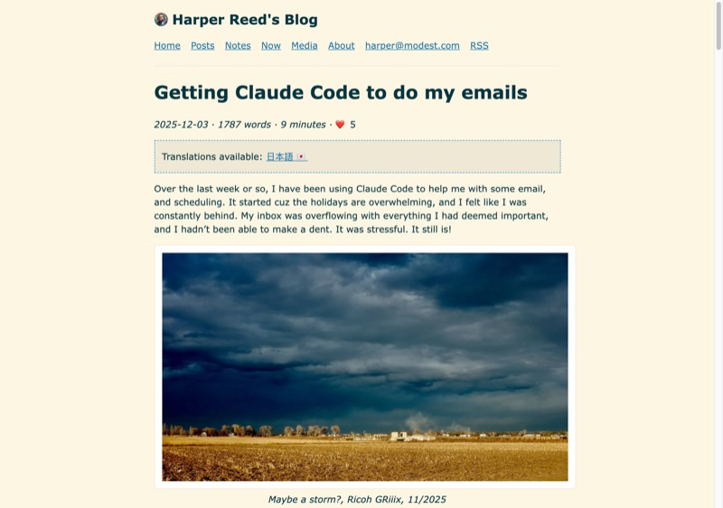
Ex-CTO Obama campaign • Claude Code + Pipedream
Not a tool but a workflow: Reed uses Claude Code + Pipedream MCP to manage email during vacations. The key insight from his blog: "I trust AI to write code way more than to write emails." So instead of AI-generated replies, he uses AI to organize and prioritize, keeping the human in the loop for actual writing.
I trust AI to write code way more than to write emails.Claude Code Pipedream MCP workflow
Two-tier: pattern matching (free) + LLM (expensive)
The most sophisticated email triage architecture: Tier 1 runs every 30 min with no LLM — pure pattern matching, keyword scanning, Gmail label rules. Tier 2 runs daily at 5 PM with Claude classifying ~50 emails, context-aware drafts. Graduated autonomy model: after 20+ approved drafts with <20% edit rate, emails auto-send. Cost: $100/mo Claude Max, 26 agents.
Caffery Yang • No API keys needed
Brilliantly lazy: instead of setting up OAuth and Google Cloud projects, this Chrome extension uses your existing browser session as the Gmail API. No Google Cloud, no OAuth, no API keys. 95%+ success rate with auto-recovery. The insight: your browser is already authenticated — why not use that?
No Google Cloud. No OAuth. No API keys.Chrome Extension MCP zero-config
From expense tracking to Bloomberg Terminal-grade portfolio analytics
Seth Hobson • 29+ tools • Pre-seeded 520 S&P 500 stocks
A Bloomberg Terminal in your Claude Desktop. VectorBT backtesting with 15+ strategies plus ML, 20+ technical indicators, portfolio optimization. The pre-seeded S&P 500 data means you can start analyzing immediately. This is what happens when a quant builds their own tools instead of paying $25K/year for a Bloomberg terminal.
Python FastMCP VectorBT ML backtestingtradermonty • 822 stars
Curated skills for equity investors: market analysis, backtesting, CANSLIM/VCP/dividend screening, earnings momentum, institutional ownership tracking (13F filings). 822 stars makes it the most popular finance-AI project. The skill-based architecture means you can pick and choose — want just dividend screening? Install that one skill.
Python FMP API FINVIZ AlpacaReusable Claude Code skill • Multi-brokerage
Parses CSVs from Fidelity, Schwab, Vanguard, E*TRADE, Merrill. Generates gap analysis across 10 fund categories, four-phase action plans, tax-loss harvesting strategies. Published as a reusable Claude Code skill — install it and point it at your brokerage exports. The kind of analysis a financial advisor charges $500 for.
The kind of plan you'd pay a financial advisor to put together, except I built it with an AI.Claude Code skill CSV parsing multi-brokerage
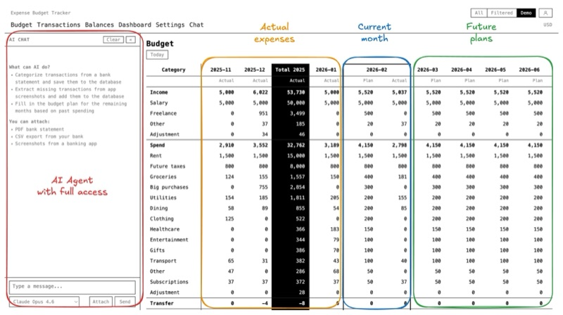
Vladimir Budilov • AWS Bedrock + Claude Sonnet 3.5
Upload bank statements and credit card PDFs, get auto-categorized transactions with spending graphs and subscription detection. The "aha moment" from the blog post: "I discovered three subscriptions that had been silently draining money, including a $19.99 monthly charge for an Adobe account we hadn't used in ages." That discovery alone paid for the project.
I discovered three subscriptions that had been silently draining money.AWS Bedrock Textract Claude Sonnet PDF OCR
Stefan Stefanov • 124 stars
Connects Claude Desktop to Actual Budget (the popular self-hosted finance app) for natural language queries. "How much did I spend on groceries this month?" instead of clicking through the UI. Read-only and write-enabled modes. The most practical finance MCP — it builds on an existing tool rather than replacing it.
TypeScript Actual Budget MCP DockerReact + TypeScript • Saved $300
Federal + Ohio state + Columbus city taxes, multiple W-2 support, progressive brackets, Child Tax Credit phase-outs with interactive charts. Claude Code built the whole thing. The blog post quote: "Saved me $300" — which is either the cost of TurboTax or an accountant visit. The most satisfying ROI in the report.
In a terminal window, you can see it thinking through architecture decisions in real time. Saved me $300.React TypeScript Vite Claude Code
The cultural shift behind the code
Robin Sloan coined the term "home-cooked software" in his influential 2020 essay — apps built for one person's specific needs, not for scale, not for profit. In 2025-2026, AI coding tools made this vision accessible to non-programmers for the first time.
The analogy is precise: nobody expects a home-cooked meal to compete with a restaurant. It doesn't need to scale, it doesn't need a business model, it doesn't need to handle edge cases for a million users. It just needs to nourish one household. Similarly, a thyroid tracker built by a thyroid patient, or a CRM built by a dad tracking birthday parties, doesn't need to be Salesforce. It just needs to work for one person.
Maggie Appleton, in her essay on "home-cooked software," argues that AI coding assistants are creating a new class of software — too specific for the market, too useful to not exist. The ADHD morning checklist. The Swiss insurance form filler. The baby sleep tracker that reverse-engineers a proprietary API. No company would build any of these. They only exist because one person needed them.
The a16z thesis extends this: the number of software applications in the world is about to increase by orders of magnitude, with most of them serving audiences of one.
Varia is an outlier in this report. Most projects here are weekend builds or single-purpose tools. Varia is a full personal infrastructure: email triage with smart rules that learn, package tracking across couriers, a background task runner (issues system) with an Overseer AI, contacts indexed across 5 platforms, smart home thermostat control, payment detection with QR codes, calendar sync, WhatsApp/Signal integration, and a reminder system — all built on Redis + CherryPy + Claude Code.
Only Fischer's KAI system (135K lines of TypeScript) comes close in scope. The pattern both systems prove: when you build for yourself with AI, there's no ceiling. Personal software can be as sophisticated as enterprise software. The difference is that every feature exists because one person actually needed it, not because a PM spec'd it for a market segment.
What we learned from 170+ projects
v4 — April 14, 2026. ~50 curated projects from 170+ researched, across 6 categories.
Previous versions: v3
Built by Tomasz Kolinko using Claude Code. Screenshots from live apps, GitHub READMEs, and landing pages.